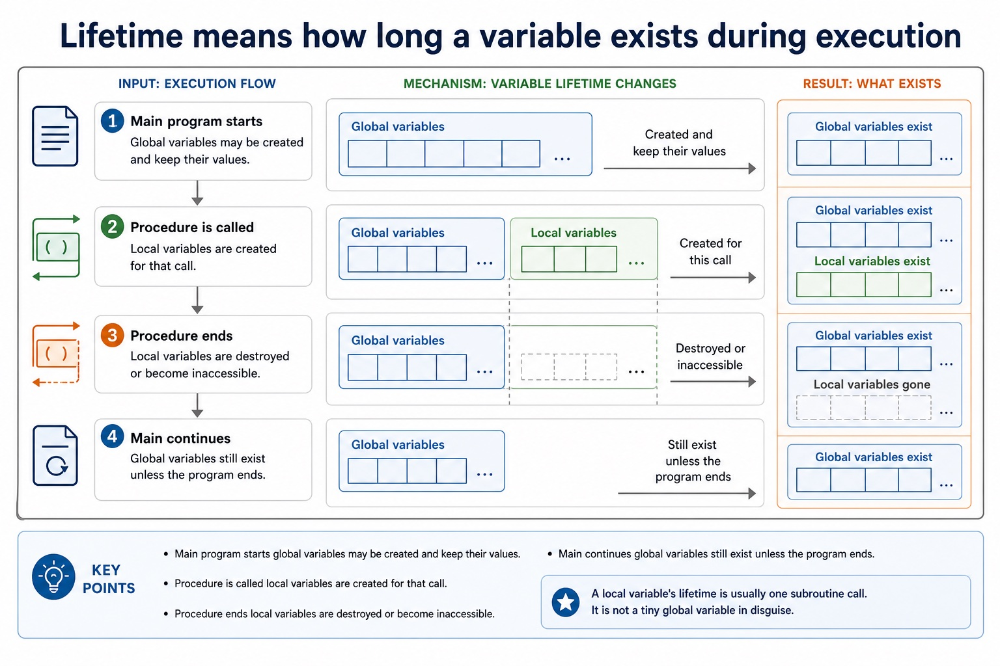
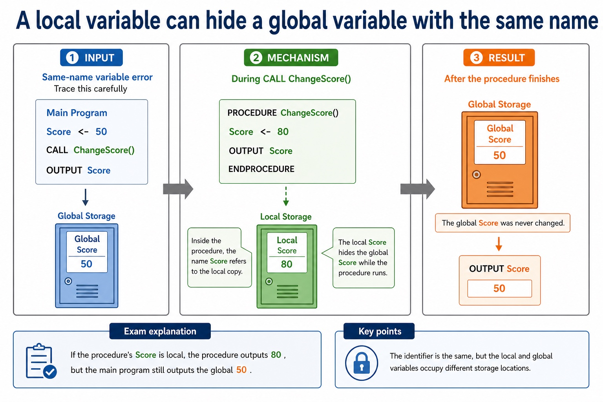
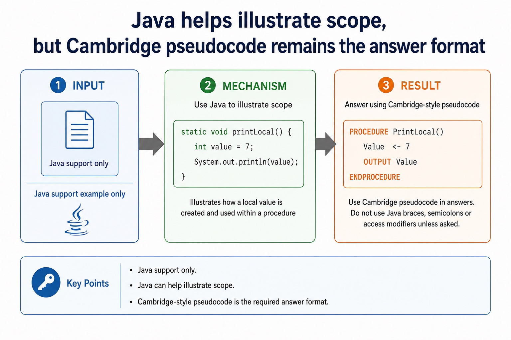

Lesson 132 | 45 minutes | Paper 2 Section 11 | informal questioning
Variables have borders. Some passports are very local.
Scope is where an identifier can be used. Lifetime is how long its value exists while the program runs.
Local variables belong to a subroutine or block; global variables can be accessed more widely. The exam
point is not just naming them, but tracing which variable is being changed.
Define scope, lifetime, local variable and global variable
Trace variable values inside and outside subroutines
Correct bugs caused by inaccessible variables or accidental global changes
Global visible widely longer lifetime
Local inside subroutine created on call
Trace which variable? name alone is not enough
A variable can share a name with another variable and still be a different storage location.
Why this matters
Paper 2 trace questions often use local and global variables to test whether candidates follow the actual data, not just the names.
Common trap
A local variable with the same name as a global variable does not automatically change the global variable.
Warm-up hook
Which Count is being output?
Two variables can have the same name in different scopes. This is where casual reading gets expensive.
Code fragment
Count <- 10
PROCEDURE ShowCount()
Count <- 3
OUTPUT Count
ENDPROCEDURE
CALL ShowCount()
OUTPUT Count
Assumption for this warm-up
The assignment inside ShowCount creates or uses a local Count for the procedure.
Predict the two outputs before pressing a choice.
Outputs 3 then 3
Outputs 3 then 10
Outputs 10 then 3
Always gives an error
Choose the output pair.
Scope
Scope means where a variable or identifier can be accessed
Chinese support: scope 作用域, access 访问, identifier 标识符。
Inside scope
PROCEDURE DisplayTotal()
Total <- 25
OUTPUT Total
ENDPROCEDURETotal is accessible inside DisplayTotal.
Outside scope
CALL DisplayTotal()
OUTPUT TotalIf Total was local to the procedure, the main algorithm cannot use it directly.
Scope means where a variable or identifier can be accessed
Scope means where a variable or identifier can be accessed: source-grounded visual explanation.
Lesson fact: Inside scopeLesson fact: PROCEDURE DisplayTotal()Lesson fact: Total <- 25Lesson fact: OUTPUT TotalLesson fact: ENDPROCEDURELesson fact: Total is accessible inside DisplayTotal .Lesson fact: Outside scopeLesson fact: CALL DisplayTotal()Lesson fact: If Total was local to the procedure, the main algorithm cannot use it directly.
Lifetime
Lifetime means how long a variable exists during execution
Main program starts global variables may be created and keep their values
Procedure is called local variables are created for that call
Procedure ends local variables are destroyed or become inaccessible
Main continues global variables still exist unless the program ends
A local variable's lifetime is usually one subroutine call. It is not a tiny global variable in disguise.
Lifetime means how long a variable exists during execution

Lifetime means how long a variable exists during execution: source-grounded visual explanation.
Lesson fact: LifetimeLesson fact: Main program starts global variables may be created and keep their valuesLesson fact: Procedure is called local variables are created for that callLesson fact: Procedure ends local variables are destroyed or become inaccessibleLesson fact: Main continues global variables still exist unless the program endsLesson fact: A local variable's lifetime is usually one subroutine call. It is not a tiny global variable in disguise.
Local variables
Local variables are declared inside a subroutine or block
Cambridge-style pseudocode
PROCEDURE CalculateBonus(Mark : INTEGER)
Bonus <- Mark DIV 10
OUTPUT Bonus
ENDPROCEDURE
Reasoning
Markparameter local to this procedure call
Bonuslocal variable used only inside the procedure
After call Bonus is not directly available in the main algorithm
Local variables are declared inside a subroutine or block
Local variables are declared inside a subroutine or block: source-grounded visual explanation.
Lesson fact: Local variablesLesson fact: Cambridge-style pseudocodeLesson fact: PROCEDURE CalculateBonus(Mark : INTEGER)Lesson fact: Bonus <- Mark DIV 10Lesson fact: OUTPUT BonusLesson fact: ENDPROCEDURELesson fact: ReasoningLesson fact: Mark parameter local to this procedure callLesson fact: Bonus local variable used only inside the procedureLesson fact: After call Bonus is not directly available in the main algorithm
Global variables
Global variables are declared outside subroutines and can be accessed widely
Cambridge-style pseudocode
Total <- 0
PROCEDURE AddScore(Score : INTEGER)
Total <- Total + Score
ENDPROCEDURE
Reasoning
Total is declared outside the procedure, so it is global in this fragment.
Global variables can make updates convenient, but they can also make tracing harder because many parts of a program may change the value.
Global variables are declared outside subroutines and can be accessed widely
Global variables are declared outside subroutines and can be accessed widely: source-grounded visual explanation.
Lesson fact: Global variablesLesson fact: Cambridge-style pseudocodeLesson fact: Total <- 0Lesson fact: PROCEDURE AddScore(Score : INTEGER)Lesson fact: Total <- Total + ScoreLesson fact: ENDPROCEDURELesson fact: ReasoningLesson fact: Total is declared outside the procedure, so it is global in this fragment.Lesson fact: Global variables can make updates convenient, but they can also make tracing harder because many parts of a program may change the value.
Same name trap
A local variable can hide a global variable with the same name
Trace this carefully
Score <- 50
PROCEDURE ChangeScore()
Score <- 80
OUTPUT Score
ENDPROCEDURE
CALL ChangeScore()
OUTPUT Score
Exam explanation
If the procedure's Score is local, the procedure outputs 80, but the main program still outputs the global 50.
The name is the same; the storage location is not. Same label, different locker.
A local variable can hide a global variable with the same name

A local variable can hide a global variable with the same name: source-grounded visual explanation.
Lesson fact: Same name trapLesson fact: Trace this carefullyLesson fact: Score <- 50Lesson fact: PROCEDURE ChangeScore()Lesson fact: Score <- 80Lesson fact: OUTPUT ScoreLesson fact: ENDPROCEDURELesson fact: CALL ChangeScore()Lesson fact: Exam explanationLesson fact: If the procedure's Score is local, the procedure outputs 80 , but the main program still outputs the global 50 .Lesson fact: The name is the same; the storage location is not. Same label, different locker.
Compare
Local and global variables differ by accessibility and lifetime
Feature
Local variable
Global variable
Declared
inside a subroutine or block
outside subroutines
Scope
limited to that subroutine or block
available more widely in the program
Lifetime
usually while the subroutine call is active
usually while the program is running
Main risk
using it outside scope
unexpected changes from different program parts
Local and global variables differ by accessibility and lifetime
Local and global variables differ by accessibility and lifetime: source-grounded visual explanation.
Lesson fact: Local variableLesson fact: Global variableLesson fact: DeclaredLesson fact: inside a subroutine or blockLesson fact: outside subroutinesLesson fact: limited to that subroutine or blockLesson fact: available more widely in the programLesson fact: LifetimeLesson fact: usually while the subroutine call is activeLesson fact: usually while the program is runningLesson fact: Main riskLesson fact: using it outside scope
Java support only
Java helps illustrate scope, but Cambridge pseudocode remains the answer format
Cambridge-style pseudocode
PROCEDURE PrintLocal()
Value <- 7
OUTPUT Value
ENDPROCEDURE
Java support example only
static void printLocal() {
int value = 7;
System.out.println(value);
}Do not answer Paper 2 with Java braces, semicolons or access modifiers unless the question specifically asks for Java.
Java helps illustrate scope, but Cambridge pseudocode remains the answer format

Java helps illustrate scope, but Cambridge pseudocode remains the answer format: source-grounded visual explanation.
Lesson fact: Java support onlyLesson fact: Cambridge-style pseudocodeLesson fact: PROCEDURE PrintLocal()Lesson fact: Value <- 7Lesson fact: OUTPUT ValueLesson fact: ENDPROCEDURELesson fact: Java support example onlyLesson fact: static void printLocal() {Lesson fact: int value = 7;Lesson fact: System.out.println(value);Lesson fact: Do not answer Paper 2 with Java braces, semicolons or access modifiers unless the question specifically asks for Java.
Variable chooser
Should this be local or global?
Select a scenario to see the recommended scope and exam reasoning.
Pick a scenario.
Worked examples
Trace the variable, not just the name
Practice with instant checking
Definitions and trace values
Use exact vocabulary for definitions. For trace questions, type the final value or key term.
Mistake debugging
Find the scope error
Exam-style questions
Answer first, then expand the MS
Questions are original Cambridge-style practice. MS notes are strict about scope, lifetime and final values.
Summary
Three statements to keep
Scope where an identifier can be accessed in the program.
Lifetime how long a variable exists while the program executes.
Trace rule same name does not always mean same variable.
Homework
Define, trace, correct
Write definitions for scope, lifetime, local variable and global variable. Add one Chinese support note for the hardest term.
Trace the same-name Score example twice: once where the procedure variable is local, once where it updates the global variable.
Write one Cambridge-style procedure that uses a local variable correctly and explain why the variable should not be global.
Answer a 4-mark question: explain two problems caused by unnecessary global variables, using a trace or debugging example.
Marking focus: definitions need mechanism, not slogans. "Global is everywhere" is too vague unless access and lifetime are explained.